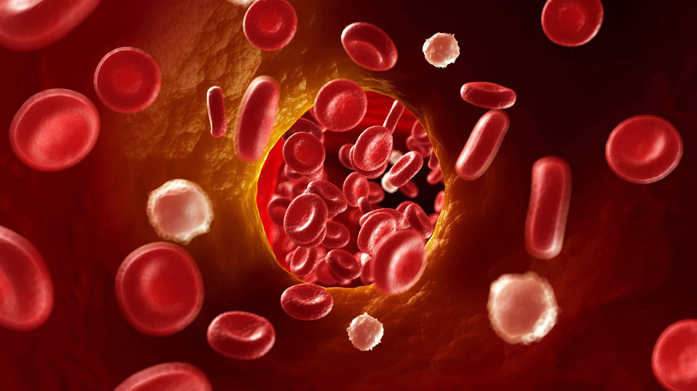

Improve Circulation .
Treat and relieve stress one result
Poor circulation happens when something interferes with your complex, far-reaching circulatory system that delivers blood, oxygen and nutrients to your entire body. When your heart, veins, arteries, capillaries and other blood vessels are healthy, they can give your cells everything they need in an efficient way. It’s a continuous cycle of bringing oxygen and other necessities to your cells and taking away waste from your cells. Problems happen when something goes wrong with some part of the delivery system or the valves that control which direction your blood goes. Like a delivery driver who runs into problems and delays along his route, blood can hit detours and roadblocks along the way. Obstacles in your blood vessels make it hard for blood to get through, especially when trying to reach the parts of your body that are the longest distance away from your heart ― your fingers and toes. The biggest problem with poor circulation is that your cells aren’t getting as much oxygen as they need. When cells don’t have the oxygen they need, they can’t function well.
Conditions that reduce your blood flow can give you bad circulation, such as:
- Smoking: Chemicals damage your blood vessels, putting you at a higher risk of atherosclerosis.
- High blood pressure: When your blood is pushing against your blood vessel walls with a lot of force, it can weaken them. This makes it harder for blood to move through them.
- Atherosclerosis: Plaque (which contains fat and cholesterol) piles up inside your arteries, limiting blood flow.
- Diabetes: Having too much glucose in your blood can harm your blood vessels.
- Deep vein thrombosis: Your body makes a blood clot in your leg, which reduces blood flow.
- Pulmonary embolism: A blood clot in your leg breaks off and goes to your lung, which keeps blood from getting to your lung.
- Peripheral artery disease: Plaque inside your peripheral arteries cuts down on the amount of blood getting to your legs and feet.
- Varicose veins: When your blood pressure goes up, it can damage the walls and valves of your veins. Blood inside varicose veins can flow the wrong way.
- Raynaud’s disease: Blood vessels in your toes and fingers get narrower when you’re stressed or cold.
- Obesity: Having obesity can put you at risk for medical problems that slow down your blood flow, such as diabetes, high blood pressure and high cholesterol.
Increase physical activity
Regular cardiovascular exercise, such as jogging, supports the circulatory system’s health and improves circulation. A 2018 studyTrusted Source notes that regular cardiovascular exercise is associated with improved cardiovascular performance and lower blood pressure. This is because this type of exercise improves the body’s ability to take in and use oxygen. It also improves the capacity of blood vessels to dilate, which helps them work more efficiently, allowing the muscles to receive oxygen more easily.
Practice yoga
Yoga is a low impact form of exercise that is easy to modify for beginners. It involves bending, stretching, and twisting. These movements can help compress and decompress a person’s veins, improving circulation. Yoga postures can improve flexibility, balance, and heart health. A simple yoga position for beginners to try is the downward-facing dog. This helps improve circulation by putting the hips and heart above the head, allowing gravity to increase blood flow toward the head.
Eat oily fish
The omega-3 fatty acids in oily fish promote cardiovascular health and improve circulation, according to this 2016 studyTrusted Source. Oily fish include:
- salmon
- mackerel
- sardines
- tuna
Drink tea
Sometimes calling a friend is not an option. If this is the case, talking calmly to yourself can be The antioxidants in tea promote cardiovascular health and may improve circulation. This is true for both black tea and green tea. A 2017 study found that black tea improves blood vessel health. Healthy blood vessels help improve circulation. Another study found that green tea consumption is associated with a reduced risk of cardiovascular health issues.
Keep iron levels balanced
Iron is an essential mineral for the circulatory system. The body needs it to make hemoglobin, which is one of the major components of red blood cells and is responsible for carrying oxygen around the body. Eating foods rich in iron, such as red meat or spinach, helps the body get enough of this essential mineral. However, maintaining a healthy balance is also necessary, as too much iron may negatively affect cardiovascular health. A 2016 studyTrusted Source found a link between insufficient iron in the body and iron-restricted erythropoiesis with anemia. However, too much iron can lead to tissue iron overload and other conditions.
Wear compression socks
Compression socks apply pressure to the calves and lower legs, forcing blood in that part of the leg to flow upward. They help create a continuous flow of blood throughout the circulatory system. A doctor may prescribe them for conditions such as varicose veins and lymphedema. They may also improve circulation.
Stop smoking
According to the American Cancer SocietyTrusted Source, circulation improves and lung function increases within 2 weeks to 3 months of quitting smoking. Just 1–12 months after quitting, tiny hair-like structures within the lungs, called cilia, begin to regain function and move mucus out of the lungs. In addition, 1–2 years after stopping smoking, the risk of heart attack drops drastically.